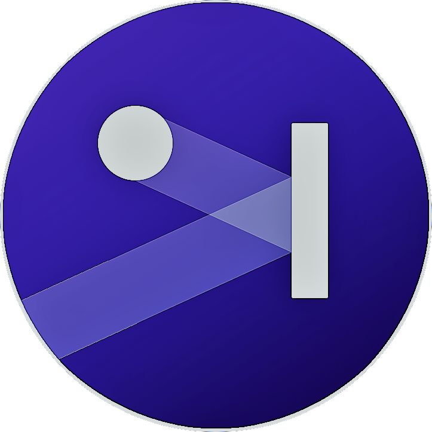
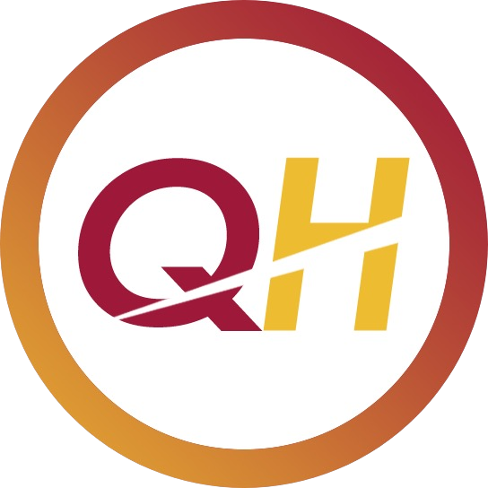

Cool C projects
Several C projects used to strengthen my understanding of the C programming language as well as my understanding of sorting algorithms and some data structures.
Pong Game
Coded using Java and Java FX Libraries, this program simulates the classic game of PONG, using 2d shapes and basic geometry. Hgihscores and records are saved in a JSON file after each round.
Hyperloop Software
Main Software used to run communications within the 2019 Pod used in the 2019 Hyperloop Pod Competition. Includes the C Arduino Code that controls Braking and Propulion Systems, as well as the GUI Overlay that sends state logic signals that put the pod into active and passive states.